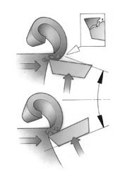

Рекомендации по применению фрез
Фреза обычно совершает резание в одном или нескольких направлениях: радиальном, периферийном и осевом. Каждый способ фрезерования можно разложить на эти три основные перемещения в сочетании с вращением фрезы.

Существует два способа фрезерования, определяемые направлением движения заготовки относительно инструмента. Их различие заключается в условиях входа и выхода зубьев фрезы из резания.
Попутное фрезерование (1) или фрезерование по подаче – это способ, при котором направления движения заготовки и вектора скорости резания совпадают. При этом толщина стружки на входе зуба в резание максимальна и уменьшается до нулевого значения на выходе.
Встречное фрезерование (2), иногда его называют традиционным, наблюдается, когда скорости резания и движение подачи заготовки направлены в противоположные стороны. При врезании толщина стружки равна нулю, на выходе – максимальна.
В случае встречного фрезерования, когда пластина начинает работу со стружкой нулевой толщины, возникают высокие силы трения, «отжимающие» фрезу и заготовку друг от друга. В начальный момент врезания зуба процесс резания больше напоминает выглаживание, с сопутствующими ему высокими температурами и повышенным трением. Зачастую это грозит нежелательным упрочнением поверхностного слоя детали.
При попутном фрезеровании условия входа пластины в резание более благоприятные. Удается избежать высоких температур в зоне резания и минимизировать склонность материала заготовки к упрочнению. Большая толщина стружки является в данном случае преимуществом. Силы резания прижимают заготовку к столу станка, а пластины в гнезда корпуса, способствуя их надежному креплению.
В процессе фрезерования стружка налипает на режущую кромку и препятствует ее работе в следующий момент врезания. При встречном фрезеровании это может привести к заклиниванию стружки между пластиной и заготовкой и, соответственно, к повреждению пластины. Попутное фрезерование позволяет избежать подобных ситуаций.
Попутное фрезерование является предпочтительным при условии, что жесткость оборудования, крепления и сам обрабатываемый материал позволяют применять данный метод. В то же время, процесс попутного фрезерования сопряжен с определенными трудностями. Силы резания стремятся затянуть фрезу на обрабатываемый припуск и прижать заготовку. Поскольку направление скорости резания и подачи совпадают, требуется беззазорный привод в механизме подачи стола. Смещение под действием сил резания стола или заготовки приведет к «подрыву» - внезапному увеличению подачи на зуб, что чревато поломкой. В случае если есть опасность вибраций, попутное фрезерование более благоприятно. Правильный выбор размера фрезы и способа закрепления детали также имеет большое значение. Направление сил резания влияет на склонность к вибрациям.
Выбор диаметра фрезы зависит, как правило, от ширины обрабатываемой заготовки, а также от мощностных характеристик оборудования. При этом важным фактором, определяющим успешное выполнение операции фрезерования, является взаимное расположение обрабатываемой поверхности и фрезы.
Существует три возможных варианта соотношения размеров фрезы и заготовки:
- диаметр фрезы равен ширине заготовки или несколько меньше, что обуславливает тонкую
стружку при врезании и выходе или же обработка производится за несколько проходов. Характерно
для случаев, когда заготовка имеет очень большие размеры, а фреза небольшой диаметр;
- диаметр фрезы на 20 - 50% больше ширины заготовки, что является наилучшим вариантом
при торцевом фрезеровании;
- диаметр фрезы значительно больше, чем ширина обработки и ось фрезы находится вне
обрабатываемой поверхности. Характерно для торцевого фрезерования и обработки концевыми
фрезами.
Ширина фрезерования особенно сильно влияет на выбор диаметра фрезы при обработке торцевыми фрезами. В этом случае рекомендуется выбирать диаметр фрезы, превышающий ширину фрезерования на 20 - 50%. Если обработка может быть произведена за несколько проходов, то ширина резания за каждый проход должна быть равной 3/4 диаметра фрезы. При этом формирование стружки и нагрузка на режущую кромку будут оптимальными.
Когда диаметр фрезы значительно превышает ширину заготовки, то в наилучшем случае ось фрезы следует сместить с оси симметрии заготовки. Близкое расположение оси фрезы к оси заготовки позволяет обеспечить наикратчайший путь зубьев фрезы в металле, надежное формирование стружки на входе и благоприятную ситуацию относительно ударных нагрузок на пластину. Но когда ось фрезы расположена точно по оси симметрии заготовки, циклическое изменение силы резания при врезании и выходе может привести к возникновению вибраций, которые приведут к повреждению пластины и плохой шероховатости поверхности. Небольшое смещение оси фрезы с оси заготовки приведет к стабилизации сил резания.
Каждый раз, когда зуб фрезы врезается в заготовку, пластина подвергается ударной нагрузке, величина которой зависит от сечения стружки, обрабатываемого материала и типа операции. Для процесса фрезерования очень важно обеспечить наилучший контакт режущих кромок с обрабатываемым материалом при входе и выходе каждого зуба, что достигается за счет правильного положения фрезы.
В первом случае (1) ось фрезы значительно смещена от края заготовки и удар при врезании приходится на вершину пластины, которая является самой чувствительной частью инструмента. Последней из зоны резания выходит также вершина пластины, нагрузка мгновенно прекращается, что создает своеобразный разгрузочный удар.
Во втором случае (2) ось фрезы расположена над краем заготовки. Пластина выходит из зоны резания, когда толщина стружка максимальна. При таком положении фрезы возникают ударные нагрузки при входе и выходе.
В третьем случае (3) центр фрезы находится над обрабатываемой поверхностью и довольно далеко от ее края. Первоначальный контакт с обрабатываемой заготовкой происходит в некотором отдалении от чувствительной вершины пластины. При выходе из зоны резания пластина освобождается от нагрузки постепенно.
Характер выхода пластины из зоны резания имеет большое значение. В конце процесса резания незначительное количество еще не срезанного материала может уменьшить задний угол. Возникновение растягивающего напряжения вдоль поверхности пластины в момент отрыва стружки очень неблагоприятно, так как может привести к поломке пластины (твердый сплав плохо работает на растяжение), а также к образованию заусенца на обрабатываемой детали. Ситуация становится критической, если центр фрезы совпадает или расположен близко к краю заготовки. При выходе из резания угол между передней поверхностью пластины и краем заготовки должен быть благоприятен для состояния режущей кромки, а не способствовать ее разрушению. Большие трудности возникают при наличии раковин в обрабатываемой заготовке. Приходится применять пластины с более прочной режущей кромкой или даже выбрать фрезу другого диаметра или шага. Каждая фрезерная операция должна быть внимательно проанализирована для того чтобы выбрать наилучшую фрезу и пластины к ней.
На толщину срезаемого слоя при фрезеровании влияет главный угол в плане, который измеряется между главной режущей кромкой пластины и обрабатываемой поверхностью. Также главный угол в плане оказывает влияние на силы резания и стойкость инструмента. Уменьшение угла в плане ведет к образованию более тонкой стружки для данного диапазона подач. Уменьшение толщины стружки происходит из-за распределения одного и того же объема снимаемого металла на большей длине режущей кромки. При меньшем угле в плане режущая кромка постепенно входит в работу и выходит их нее. Это уменьшает радиальную составляющую силы резания и защищает режущую кромку от возможных поломок. С другой стороны, неблагоприятным фактором является увеличение осевой составляющей силы резания, что вызывает ухудшение шероховатости поверхности тонкостенных деталей. В основном фрезы выпускаются с главным углом в плане 45, 90 и 10°, а также фрезы с круглыми пластинами.
При угле в плане 90° сила резания направлена в основном радиально в соответствии с направлением подачи. Это означает, что обрабатываемая поверхность не подвергается большому давлению, что благоприятно для нежестких заготовок. Основная область применения таких фрез – обработка прямоугольных уступов.
При работе фрезой с углом в плане 45° осевые и радиальные силы резания практически одинаковы и потребляемая мощность невысока. Это фрезы универсального применения. Особенно они рекомендуются для обработки материалов, дающих элементную стружку и склонных к выкрашиваниям при значительных радиальных усилиях на выходе инструмента. При врезании инструмента меньше нагрузка на режущую кромку и меньше склонность к вибрациям при больших вылетах инструмента или при закреплении в приспособлениях с небольшими усилиями зажима. Меньшая толщина срезаемого слоя при угле в плане 45° позволяет увеличивать минутную подачу стола, т.е. повысить производительность обработки.
Фрезы с углом в плане 10° рекомендуются для продольного фрезерования с большими подачами и плунжерного фрезерования, когда характерны небольшие толщины стружки и высокие скоростные параметры. Преимуществом обработки такими фрезами являются низкие радиальные усилия резания. А также преобладание осевой составляющей силы резания как при радиальном, так и при осевом направлении подачи, что уменьшает склонность к вибрациям и предоставляет большие возможности для увеличения скоростей снятия материала.
У фрез с круглыми пластинами главный угол в плане меняется от 0 до 90° в зависимости от глубины резания. Эти фрезы имеют очень прочную режущую кромку и могут работать при больших подачах стола, поскольку образуют довольно тонкую стружку на большой длине режущей кромки. Фрезы с круглыми пластинами рекомендуется применять для обработки труднообрабатываемых материалов, таких как титан и жаропрочные сплавы. Направление сил резания меняется вдоль радиуса пластины, поэтому направление суммарной нагрузки зависит от глубины резания. Современная геометрия круглых пластин делает их более универсальными, обеспечивая стабильность процесса резания, меньшую потребляемую мощность и, соответственно, меньшие требования к жесткости оборудования. В настоящее время эти фрезы широко используются для снятия больших объемов металла.
|
Фрезы с углом в плане 90° Обработка тонкостенных заготовок Обработка при нежестких приспособлениях Обработка прямоугольных уступов |
Фрезы с углом в плане 45° Для операций общего назначения Уменьшение вибраций при больших вылетах инструмента Уменьшение толщины стружки позволяет повысить производительность |
Фрезы с круглыми пластинами Прочные режущие кромки с возможностью множественной индексации Фрезы общего назначения Утончение стружки благоприятно сказывается на процессе резания при обработке жаропрочных сплавов |